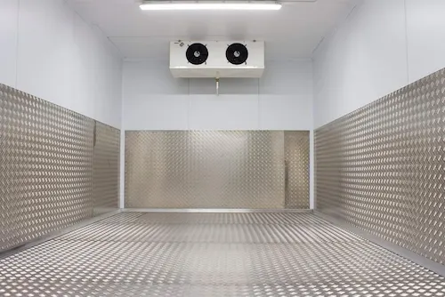

Every decision in a cold room project — from panel thickness to compressor capacity — flows from a single number: the total refrigeration load. Under-size it and you get temperature failures; over-size it and you waste capital and energy. This guide explains exactly how to calculate it correctly.
1. Why Accurate Load Calculation Matters
A refrigeration system must remove heat continuously to maintain the design temperature. That heat originates from multiple independent sources, and each must be quantified separately before summing to a total. Engineers typically apply a 10–15% safety factor on top of the calculated total to account for model uncertainty, aging components, and real-world variations.
In Saudi Arabia's climate, where summer ambient temperatures regularly reach 45 °C and humidity is high in coastal regions, the transmission and infiltration loads are significantly larger than in temperate climates — making local calculation essential rather than applying generic international references.
2. The Five Heat Gain Sources
2.1 Transmission Load (Qtr)
Heat conducted through walls, ceiling, and floor due to the temperature difference between the inside and outside of the room.
U = overall heat transfer coefficient (W/m²·K) | A = surface area (m²) | ΔT = Tambient − Troom (K)
| Panel Thickness | U-Value (W/m²·K) | Recommended Application |
|---|---|---|
| 50 mm PIR | 0.38 | Chilling rooms (+2 to +8 °C) |
| 100 mm PIR | 0.20 | Freezing rooms (−18 to −22 °C) |
| 150 mm PIR | 0.13 | Blast freezers (−30 to −40 °C) |
| 200 mm PIR | 0.10 | Long-term frozen storage (−25 °C+) |
2.2 Product Load (Qpr)
Heat that must be extracted from the product to bring it from entry temperature to storage temperature. This has two components:
- Sensible heat: Q = m × cp × ΔT / time
- Latent heat of freezing (if crossing 0 °C): Q = m × Lf / time
m = daily product mass (kg/day) | cp = specific heat (kJ/kg·K) | 86,400 = seconds per day
For products that enter above 0 °C and must be frozen, the latent heat of fusion (approximately 334 kJ/kg for water-based products) represents the largest single load component and must never be omitted.
2.3 Infiltration / Air Change Load (Qinf)
Every time a door opens, warm moist air enters and cold dry air escapes. The infiltration load depends on door dimensions, frequency of use, the air enthalpy difference, and whether a door curtain or air curtain is installed. ASHRAE Handbook Refrigeration (Chapter 13) provides air-change data indexed by room volume and traffic class. A conservative approximation for daily operations is 0.5–1.0 air changes per hour for automated high-traffic logistics rooms.
2.4 Internal Load (Qint)
Sources inside the cold room that continuously release heat:
- Lighting: 3–8 W/m² floor area (LED strongly recommended in cold rooms)
- Forklifts / electric motors: ~75% of rated power becomes heat
- Personnel: ~270 W per person in chilling rooms; ~450 W in freezing rooms
- Evaporator fan motors: 100% of motor power becomes heat inside the room
2.5 Equipment Load (Qeq)
Defrost heaters in the evaporator add heat during defrost cycles. For electric defrost systems, this typically adds 5–12% to the total load. Hot-gas defrost systems have lower electrical consumption but must still be accounted for thermally.
3. Total Refrigeration Load
SF = Safety Factor (1.10 to 1.15 is standard engineering practice)
Convert the result from kJ/day to kW for compressor sizing:
4. Worked Example: 100 m² Meat Chilling Room
| Parameter | Value |
|---|---|
| Floor area | 100 m² (10 × 10 m) |
| Internal height | 4 m → Volume = 400 m³ |
| Storage temperature | +2 °C |
| Ambient temperature | 45 °C (Saudi summer) |
| Product entry temperature | 20 °C |
| Daily product load | 2,000 kg/day beef (cp = 3.52 kJ/kg·K) |
| Panel U-value | 0.38 W/m²·K (50 mm PIR) |
| Total envelope area | 340 m² |
Qpr = 2,000 × 3.52 × (20 − 2) ÷ 86,400 = 1.47 kW
Qinf ≈ 0.8 kW (medium traffic — ASHRAE tables)
Qint = 100 × 5 W/m² (LED) + 270 W (1 person) = 0.77 kW
Qeq ≈ 0.5 kW (fan motors + defrost allowance)
──────────────────────────────────────────────────
Qsubtotal = 9.04 kW
Qtotal = 9.04 × 1.12 = ≈ 10.1 kW → select 12 kW compressor
5. Insulation Selection for Saudi Conditions
| Room Type | Temperature | Min. Wall Panel | Floor Panel |
|---|---|---|---|
| Chilling / Produce | 0 to +10 °C | 50 mm PIR | 50 mm PIR |
| Meat / Dairy | −2 to +4 °C | 80 mm PIR | 80 mm PIR |
| Freezing | −18 to −22 °C | 100 mm PIR | 100 mm PIR |
| Blast Freezer | −30 to −40 °C | 150 mm PIR | 150 mm PIR |
| Long-term Frozen | −25 °C and below | 200 mm PIR | 150 mm PIR |
6. Common Calculation Mistakes
- Omitting latent heat of fusion: For products that freeze, this is typically the largest single load and is frequently forgotten in preliminary estimates.
- Using ambient air temperature instead of effective temperature: Solar-exposed surfaces can have an effective ΔT 8–12 °C higher than measured air temperature.
- Ignoring evaporator fan motor heat: Fans run continuously — 100% of their electrical input becomes heat inside the room.
- Applying temperate infiltration tables to Saudi conditions: Higher ambient humidity dramatically increases enthalpy difference — use local psychrometric data.
- No safety factor: Equipment degrades, products vary, and calculation models are approximations. Always apply at least 10%.
7. Use the Free Online Calculator
Rather than working through these equations manually, use Al Farida Ice's free online refrigeration load calculator — it implements all five load components, applies the latent heat formula automatically, and generates a detailed breakdown.
8. When to Consult a Specialist
Self-calculation is adequate for standard rectangular rooms with a single product type. Involve a refrigeration engineer when:
- The room has irregular geometry or multiple temperature zones
- Products have varying specific heat values or biological respiration heat (fruits, vegetables)
- The system uses ammonia (R717) — safety and regulatory requirements apply
- Multi-stage compression or cascade systems are involved
- Energy efficiency certification (ISO 50001 or ASHRAE 90.1 compliance) is required
Need a Professional Load Calculation?
Our engineers calculate your exact refrigeration load, size the equipment, and deliver a complete technical report — no obligation.
Request Free Consultation